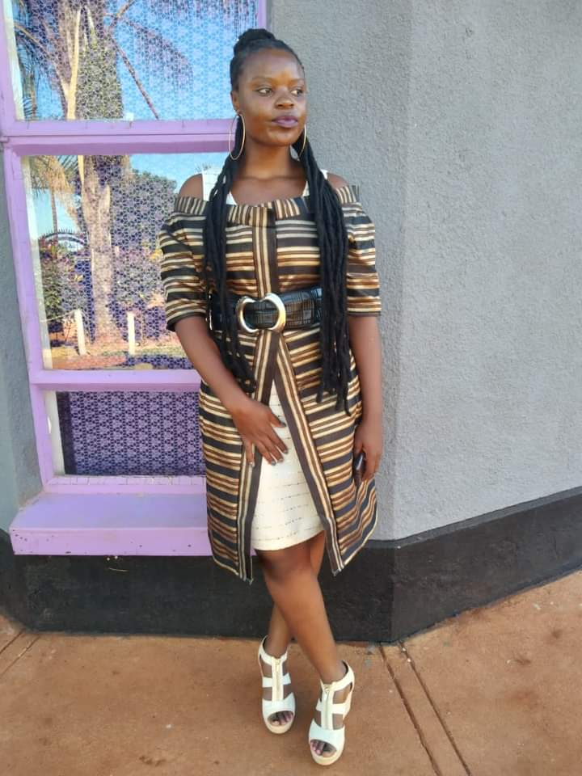
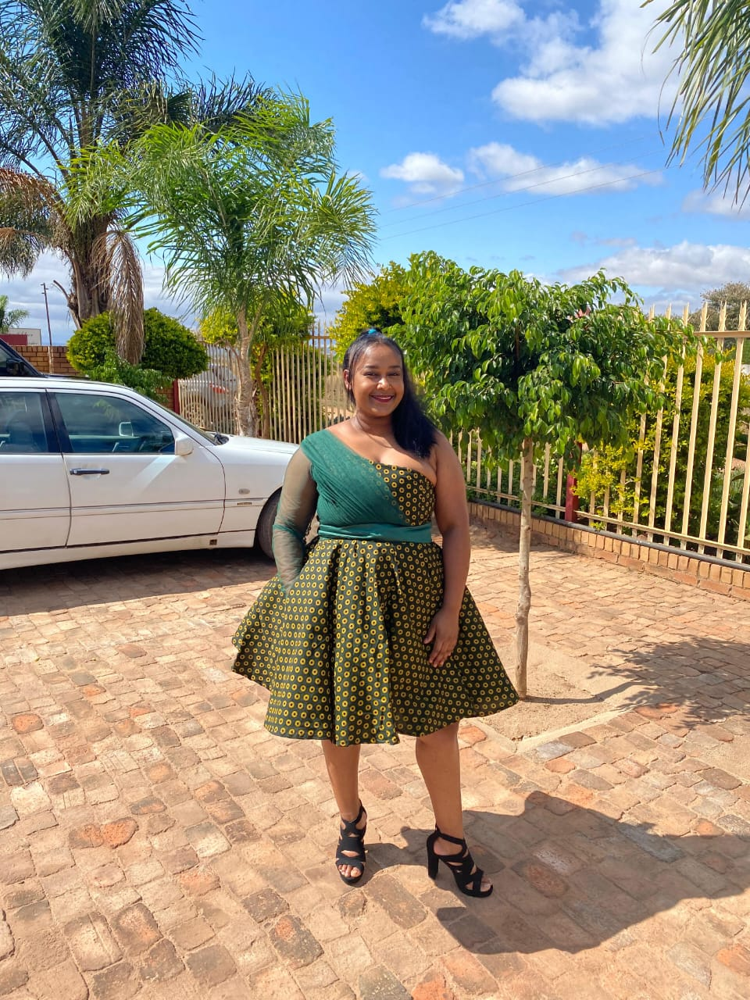
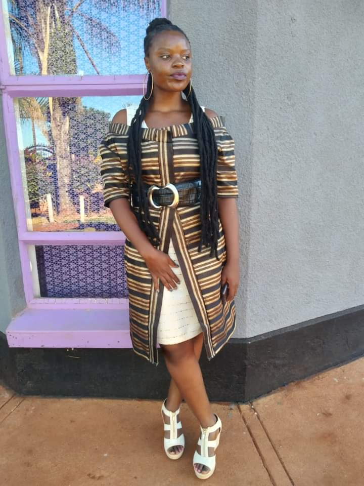
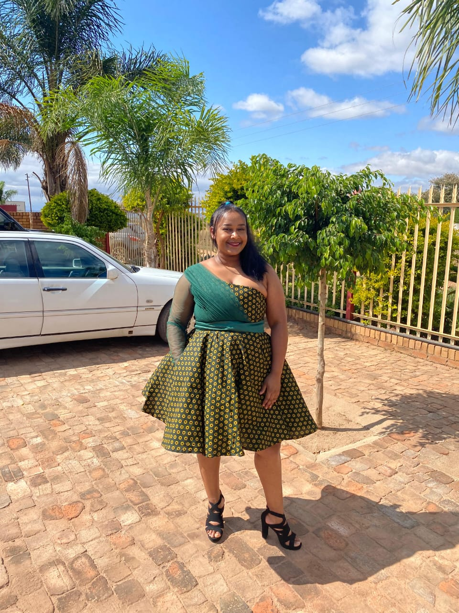

Why Custom Designs Matter
In today’s world of mass production, custom designs are a refreshing reminder of what fashion should be: personal, intentional, and of the highest quality. At Waza Wear Worldwide, we take pride in crafting bespoke garments that reflect individuality, celebrate culture, and deliver unparalleled craftsmanship. Here’s a look at why custom designs aren’t just a luxury—they’re a necessity for those who demand the best.

 



1. Unleash Your Individuality
Fashion is an expression of who you are. With custom designs, you’re not settling for off-the-rack trends that don’t represent your true self. Waza Wear works closely with you to craft clothing that resonates with your personality and lifestyle. From bold patterns to subtle elegance, every detail is tailored to ensure you stand out in the best way possible.
2. Flawless Fit, Every Time
Nothing boosts confidence like clothing that fits perfectly. Custom garments are designed with precision, taking into account every contour and curve of your body. At Waza Wear, our experienced tailors ensure a flawless fit, so you can move with ease while exuding elegance.
3. Timeless Craftsmanship
Fast fashion may be convenient, but it often sacrifices quality for quantity. Custom designs, on the other hand, are built to last. We use only premium fabrics and employ skilled artisans who pay attention to every stitch. When you choose Waza Wear, you’re investing in clothing that remains elegant and durable for years to come.
4. A Collaboration That Brings Your Vision to Life
Custom designs are a journey of creativity and collaboration. From sketching your initial ideas to selecting fabrics and perfecting the fit, our team works with you every step of the way. At Waza Wear, we’re not just designing clothes—we’re bringing your vision to life.
5. A Commitment to Sustainability
In a time when sustainability matters more than ever, custom designs are a responsible choice. By creating garments made to order, Waza Wear reduces waste and ensures every piece serves a meaningful purpose. Our commitment to sustainable practices means you can look amazing while supporting a better future for the planet.
6. Honoring South African Heritage
At Waza Wear, we proudly celebrate South Africa’s rich cultural heritage. From vibrant shweshwe prints to intricate beadwork, our designs blend tradition with modernity. Every garment tells a story of pride, craftsmanship, and the beauty of our homeland. When you wear Waza, you’re not just wearing clothes—you’re wearing a piece of South African history.
7. A Wardrobe That Leaves a Legacy
Custom clothing isn’t just about looking good—it’s about creating a legacy. Whether it’s a wedding gown, a tailored suit, or an everyday masterpiece, our designs are crafted to be passed down, cherished, and remembered. Waza Wear Worldwide brings intention and meaning to every stitch, making your wardrobe a part of your story.
Custom designs matter because you matter. At Waza Wear Worldwide, we’re here to help you embrace your individuality, celebrate your heritage, and elevate your style. Contact us today to start your journey into bespoke fashion, and experience the difference of wearing designs made just for you.